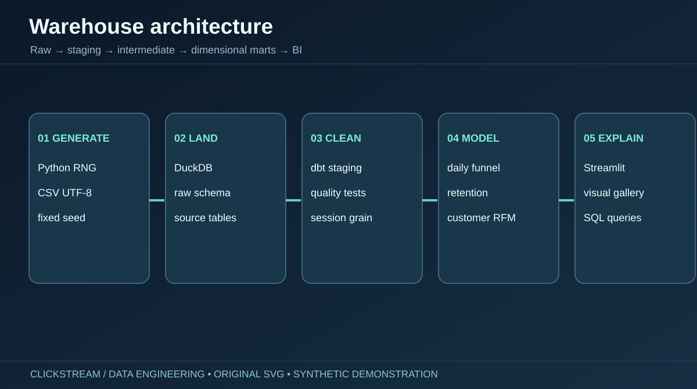
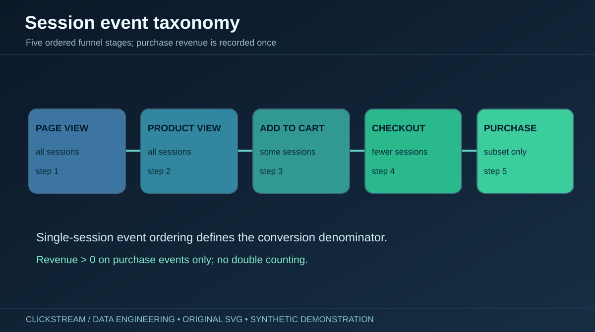
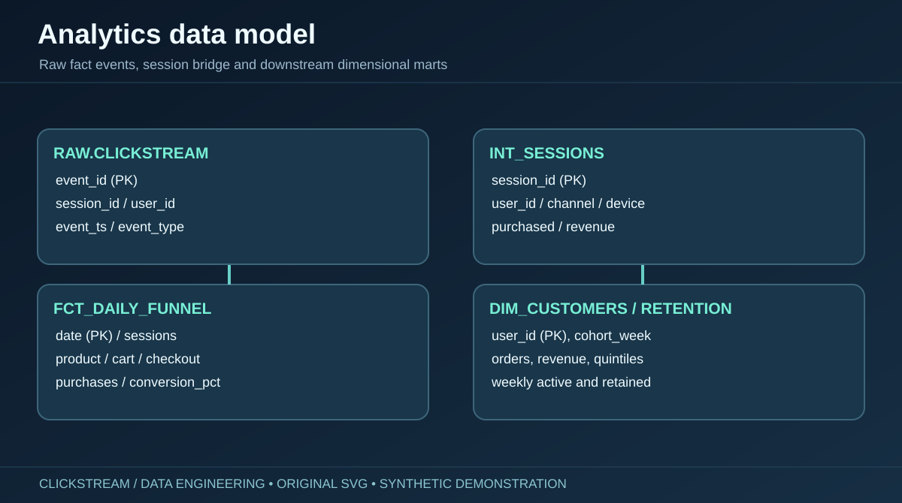
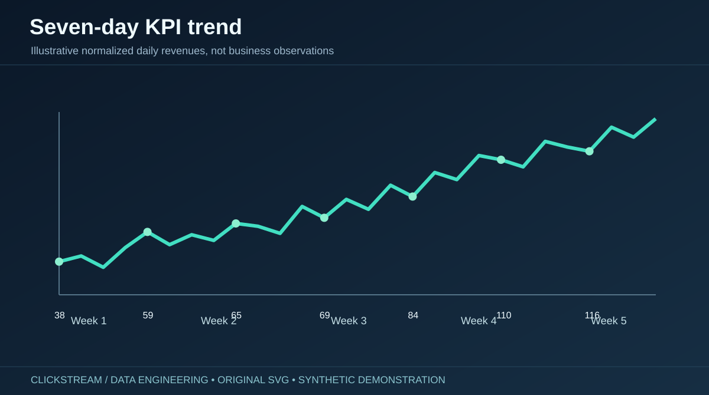

DATA ENGINEERING / ADVANCED SQL / REPRODUCIBLE ANALYTICS
Clickstream intelligence.
Ten original diagrams and illustrative charts explaining a reproducible synthetic ecommerce data warehouse. They are design illustrations, not real-world or measured business results.






